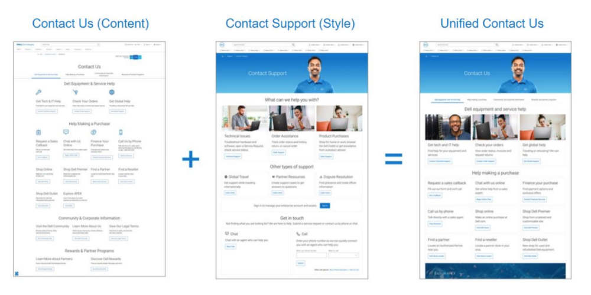

The Challenge
Dell's Sales and Marketing, Customer Care, and Technical Support departments each operated independently with distinct "Contact Us" pages on the Dell website. The siloed approach created customer confusion, leading to disjointed experiences and frequent misdirection across departments. This fragmentation affected customers worldwide across 143 country-specific pages, misrouting 20% of interactions to the wrong queues, such as sales agents handling technical support queries.
With 14 distinct contact channels — far more than Dell's competitors — managing customer interaction across the business grew increasingly complex. Dell needed a unified solution to streamline the customer experience, reduce inefficiencies, and enhance global alignment across its "Contact Us" pages.
My Role and Conceptual Vision
The idea for the Unified Contact Us Experience was my team's concept, envisioned to guide the entire Dell Technologies brand toward a new generational strategy. By converging organizational silos into a unified framework, we set a path for holistic customer interaction that Dell continues to follow today in other areas of the business.
The organization assigned to this project included two critical functions: the behavioral science team, responsible for validating the idea through rigorous customer research, and the experience design team, tasked with creating an intuitive interaction model and a cohesive look and feel. Together, we crafted an experience that transformed Dell's fragmented contact approach into a seamless, unified platform.
The Solution: A Unified Global Experience
In late 2022, we began cross-business collaboration, merging the previously disconnected "Contact Us" pages into a single, global template. Leveraging the successful design of the Contact Technical Support page, we rolled out a consistent visual and interaction model that spanned Sales, Marketing, Customer Care, and Technical Support. This global implementation marked the first time Dell achieved true alignment across all 143 country- and language-specific pages, eliminating redundancy and centralizing decision-making for updates. We created a governance process to ensure long-term consistency and simplified future updates with an easy-to-manage template.
Business Impact: Measurable Success
Our solution delivered tangible results for Dell:
- 20% reduction in chat pollution: Fewer customers ended up in the wrong channels, and remote agents no longer had to redirect customers, saving over 5,000 hours annually for sales agents alone.
- 16,000 fewer misrouted customers annually: By minimizing misdirection, agents became more productive, improving the overall efficiency of Dell's customer support workforce.
- 65% increase in page link engagement: This uptick equates to 500,000 more engaged interactions per year, enhancing Dell's ability to deliver value through its "Contact Us" page.
- 11% increase in weekly visits: This increase led to over 2.5 million page visits across the globe each year, demonstrating the improved relevance and utility of the unified experience.
- 300 basis point improvement in CSAT: Customer satisfaction surveys originating from these pages saw a rise from 85% to 88%, reflecting a positive impact for over 80,000 customers annually.
Industry Recognition
In recognition of this transformative work, Dell was awarded the 2023 TSIA STAR Award for Excellence in Organizational Convergence – the only TSIA STAR Award Dell won that year. This prestigious accolade highlights the success of converging sales, marketing, customer care, and technical support into a seamless, customer-first experience.

Looking Forward
The success of the Unified Contact Us Experience has paved the way for future innovations at Dell, such as an AI-driven "concierge" solution, enabled in part by the foundation our vision established, to further elevate the customer experience. These advancements will continue to build on the foundational work of converging Dell's organizational silos, driving customer engagement and operational efficiency for years to come.
Final Delivery
By forging this path, we helped steer Dell into a future where organizational convergence and superior customer outcomes are not just goals but strategies for success.